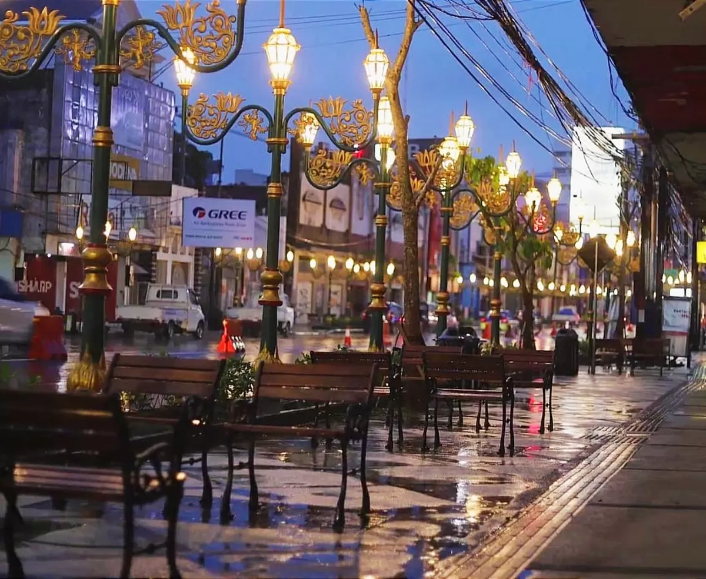
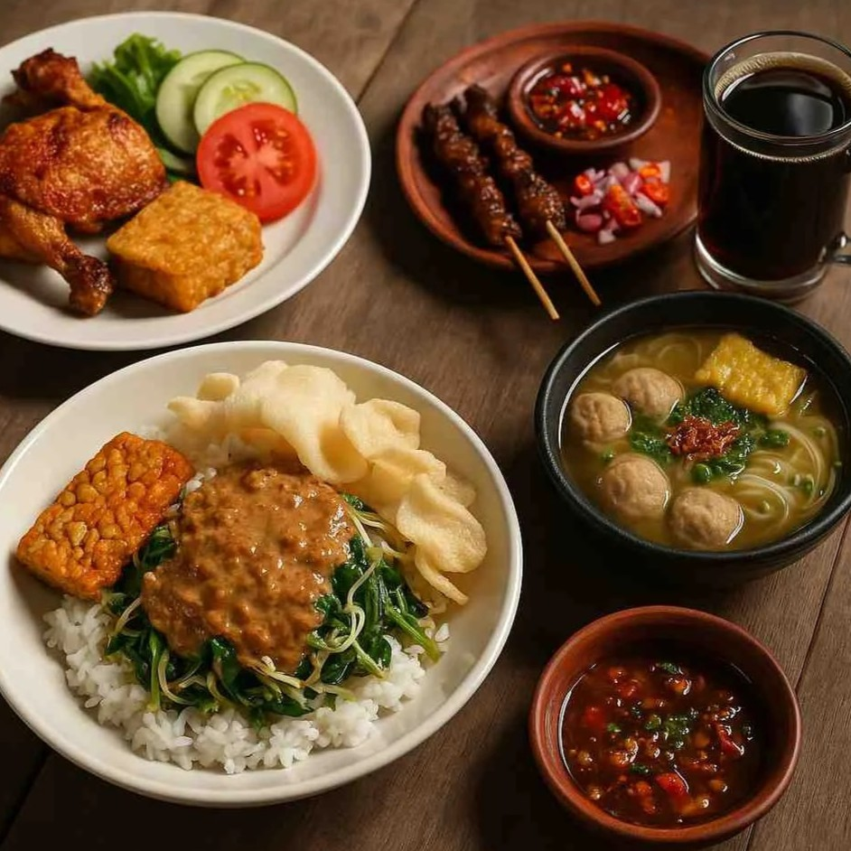
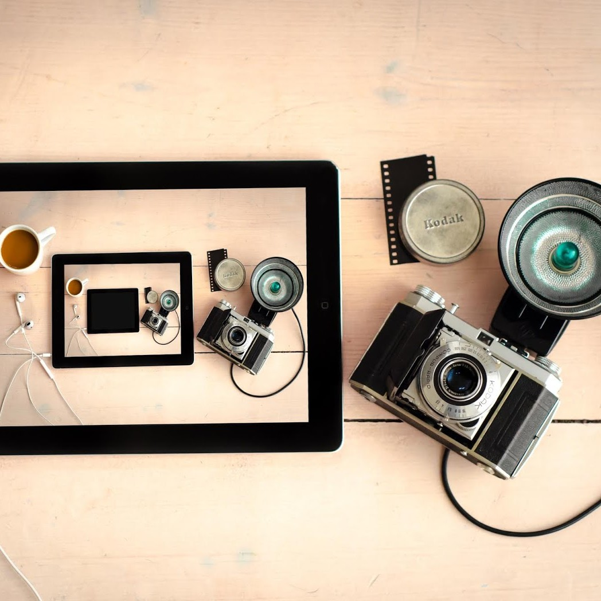
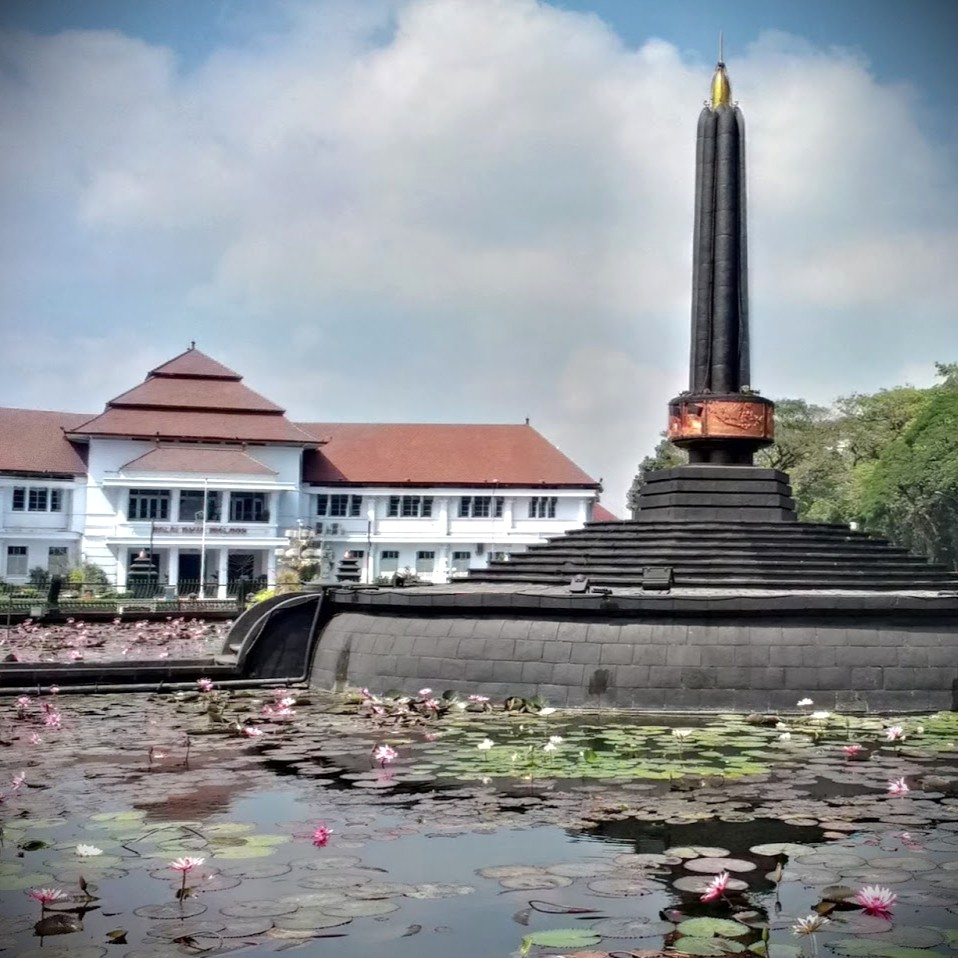

Kampung bersejarah sejak abad ke-13 di jantung Kota Malang. Jelajahi arsitektur kolonial, kuliner otentik, dan café unik di sepanjang koridor Kayutangan.
Jelajahi Sekarang
Tentang Kajoetangan
Kampoeng Heritage Kajoetangan terletak di Kelurahan Kauman, Kecamatan Klojen, Kota Malang. Nama "Kajoetangan" berasal dari pohon patangtangan yang menyerupai tangan manusia. Kampung ini memadukan gaya arsitektur kolonial Belanda dengan rumah tradisional Jawa, menjadikannya destinasi wisata budaya dan sejarah yang unik.
Katalog Wisata
Pilih kategori untuk menemukan tempat-tempat menarik di Kajoetangan


